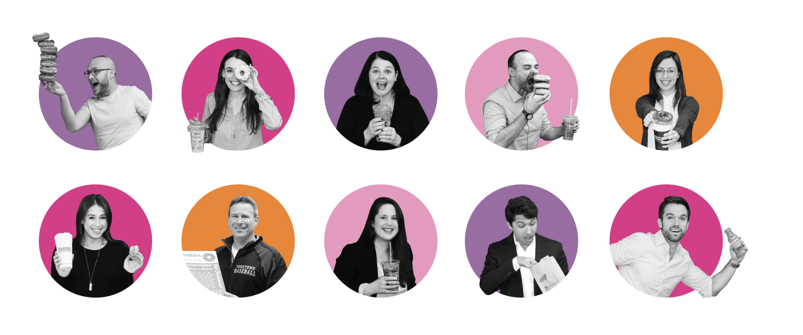

Dunkin Donuts was once a small coffee shop named "Open Kettle," which just doesn't have the same ring to it, does it? In 1980, Rosenberg changed the name to the now-iconic Dunkin' Donuts.
Why Dunkin Do-not Just Do Donuts Anymore?
Once upon a time, there was a little donut shop called Dunkin' Donuts. It had been around for decades, serving up delicious donuts and coffee to customers all over the world.
But over time, the world changed, and Dunkin Donut realized it needed to change too.

Wait, what's all this about?
As Mihir and I walked around Boston, we couldn't help but notice the bright orange and pink signs of Dunkin Donuts on every corner. We had always thought that Starbucks was the most popular coffee chain, but it seemed like Dunkin Donuts had taken over Boston.
Intrigued by the rise of Dunkin Donuts, we decided to do some research and find out how this once-small business had become such a huge success. We discovered that Dunkin Donuts was founded in Quincy, Massachusetts, in 1980 by William Rosenberg.
Let's Rewind..

William Rosenberg noticed something interesting happening in his coffee shop. Customers were taking their donuts and dipping them into their coffee. And hence the name Dunkin Donuts


Change in branding: - So, the shop decided to embark on a rebranding strategy. It has went through multiple rebranding startegies over the years. It brought in a team of quirky designers and branding experts, all of whom were fueled by Dunkin' Donuts coffee and donuts.
What is Dunkin's Story?
Let's take you on a journey through the fascinating history of Dunkin' Donuts, from its humble beginnings in the market to the major changes in strategy that have helped shape the brand we know and love today.
America Loves Coffee:
Americans have a long-standing love affair with coffee, which has become an integral part of their daily routine. The reasons for this are multifaceted, ranging from the availability of high-quality coffee beans to the rise of coffee shops and cafes. Additionally, the fast-paced lifestyle of many Americans, where time is at a premium, has also led to coffee becoming a popular beverage of choice.

From 1995 to 2018, the number of coffee houses in America almost doubled ,creating a cultural phenomenon. Let's look at how the increase in Dunkin' Donuts stores has benefited the company. To give you an overview, we selected 16 states to study the patterns of coffee store locations by grouping them based on regions.
Number of Coffee Houses in the USA 1995-2018
So does America really run on Dunkin?
To understand the number of coffee shops in comparison to the Dunkin' Donuts stores mentioned earlier, we analyzed the distribution of Dunkin' Donuts locations by state.
To those who grew up in Dunkin' Donuts' Northeast stronghold, where the orange-and-pink double D is as ubiquitous as the Golden Arches, this news may come as a shock: Dunkin' isn't everywhere! Believe it or not — not all of America runs on Dunkin, there are 6 states that do not have even one Dunkin store. Let's find out which places are those?

The Geography of Dunkin
- Washington State (Home of Starbucks)
- Oregon
- Idaho
- Montana
- North Dakota
- South Dakota
The majority of these areas are located in the northwest region of the country and are dominated by Seattle-based coffee shops.
This highlights the urgent need for Dunkin' to revitalize its brand and modify its sales and marketing strategies to remain competitive in these markets.
So why did Dunkin' Donuts Change?
The demand for coffee beverages in the United States is on the rise, and what was once just a small coffee shop has evolved into a foodie wonderland, offering a wide range of menu items to cater to everyone's cravings. It's interesting to see how the menu of Dunkin' Donuts has evolved over time. To further understand this, let's take a deep dive into the menu items and their categories.
- They changed the menu -
At first, people were content with just a simple cup of coffee and a glazed donut. But then came the breakfast sandwiches, the bagels, and the muffins. Suddenly, people had more options for their morning meal, and they couldn't be happier.

How did customers respond to the name change?
Well, it was met with both positive and negative reactions. While some customers welcomed the change, others were less than thrilled about it. Let's see the Buzz score of Dunkin, once they changed the menu.


Just Dunkin?
Customers loved the fresh, new look, and the simplified name made it easier for people to remember. But there was still one problem - people kept calling it "Dunkin' Donuts" out of habit. Learning how this brand works in terms of the change, and how many people actually relate to the brand name change.

After conducting an in-depth analysis of Dunkin Donuts' brand strategies, we have gained valuable insights into the impact of their marketing efforts on the industry as a whole. Our comprehensive understanding of their popularity and loyalty, among other aspects, was visually represented in a bar chart, providing a clear illustration of the effectiveness of their brand strategies.

By analyzing their marketing tactics, we were able to identify the key factors that have contributed to their success in the industry. We also gained a better understanding of how the recent changes in their brand identity have affected their customer base and market share. These insights will enable Dunkin Donuts to further refine their brand strategies and better connect with their customers.
